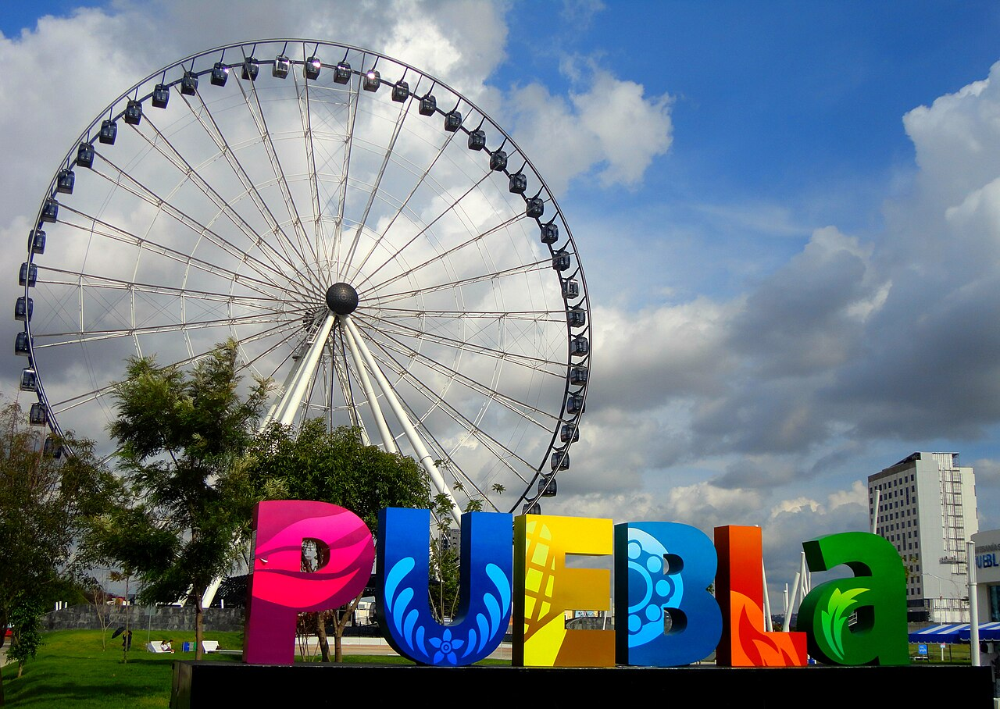

Come see La Basilica Cathedral of Puebla

Puebla is home to La Basilica Cathedral of Puebla. Home of many treasure new spanish has left.
Puebla is home to La Basilica Cathedral of Puebla. Home of many treasure new spanish has left.

La Estella de Puebla is one of the newer additions to Pueblas Tourist. First open in January 2013